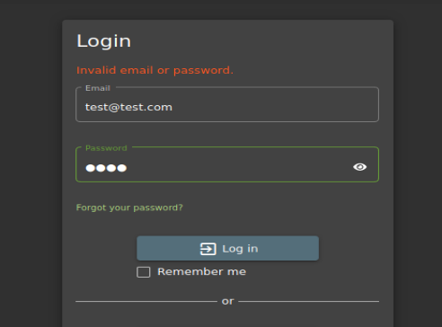

logout of Juice Shop and go to login page

this is good policy as it says could be invalid email or password like
if it just said invalid password then u know that email is correct like(this is username enumeration)
go to forgot password

thus the securtiy question isnt coming over
try with diff eail like

thus it was a valid email address and hence aaaya this is a finding
even this is bad still coz dfirectly secirtuy ques its giving and an easy one like mothers middle name
lets look at session fixation


password test1234
after registwering an dbefore login intercept the request

we got the cookie
now send to repater turn intercept off
then login
now turn intercept on and refresh the page just

there isnt any session fixation since at the stasrt there wasnt any cookie or token to start with so now we got a cookie hence no session fixation

sent it to repeater we got 304 not modified
turn intercept off and logout then turn uintercept on anfd refresh the page
- thus there wasnt any cookie or token in here which is good practice
jo session token mila tha na could send it the next time u log in to see whether it allows or not
so there isnt session fixation here
so multi factor authentication bhi dekh ke rakhna